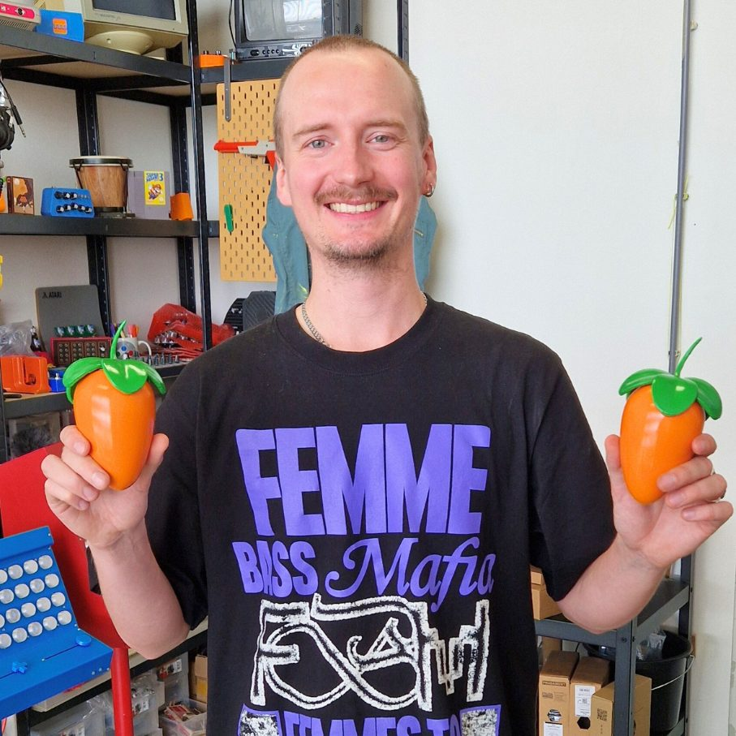

Tantu Beats
We hebben de afgelopen tijd samengewerkt met Teun de Kruif, beter bekend als Tantu Beats. Hij is een Nederlandse producer en beatmaker die al jaren actief is in de muziekwereld, bekend om zijn eigen sound, sterke online presence en samenwerkingen met uiteenlopende artiesten en projecten.

We kenden Tantu Beats al langer. Tijdens een beatprogramma leerden we elkaar kennen. Daar experimenteerde hij met zelf ontworpen muziekinstrumenten en liet zijn creativiteit de vrije loop. Later kwam hij met het idee om samen iets te maken voor FL Studio. Op dat moment viel alles op zijn plek. Het concept was om het FL Studio logo te laten 3D printen en dit te verwerken in een fruitmand. Dit object zou het hart vormen van de campagne en terugkomen in video's en ander promotiemateriaal.
Voor dit project zijn we het volledige maakproces ingedoken. We gingen van 3D ontwerp naar 3D print. We ontvingen het originele 3D render en hebben dit aangepast tot een ontwerp dat geschikt was om te printen. Na het printen hebben we het object zorgvuldig glad geschuurd en afgewerkt met zijdeglans autolak. Door die afwerking oogt het bijna als een echt stuk fruit.
Teun's werk bereikt een groot publiek en hij weet muziek en visuals op een herkenbare manier samen te brengen.
Voor ons voelt de cirkel nu rond. We begonnen ooit als fervente FL Studio gebruikers. Inmiddels mochten we zelf het logo creëren voor een campagne rondom datzelfde platform. Een project waar creativiteit, techniek en liefde voor muziek samenkomen. Dat maakt het voor ons extra bijzonder.
We zijn super blij met het resultaat. Samenwerken met Tantu Beats was sowieso een droom die uitkwam. Hopelijk mogen we in de toekomst nog eens samen iets maken.